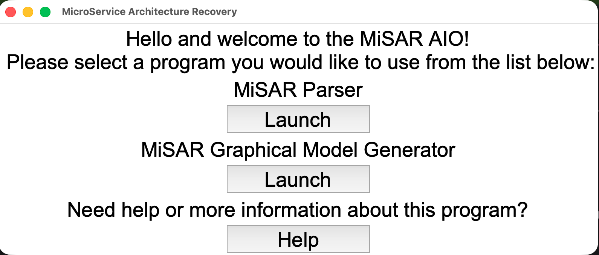
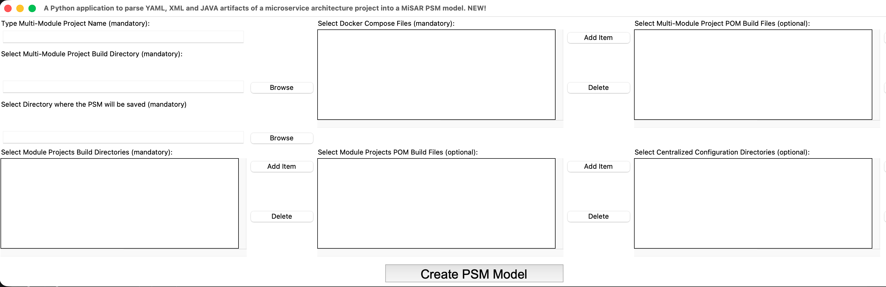
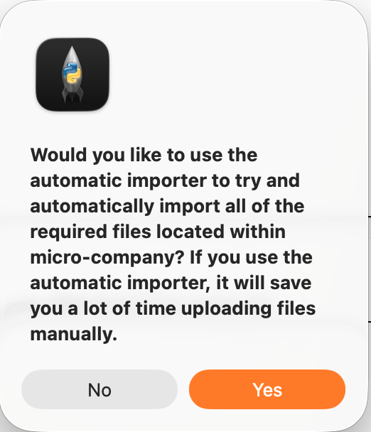
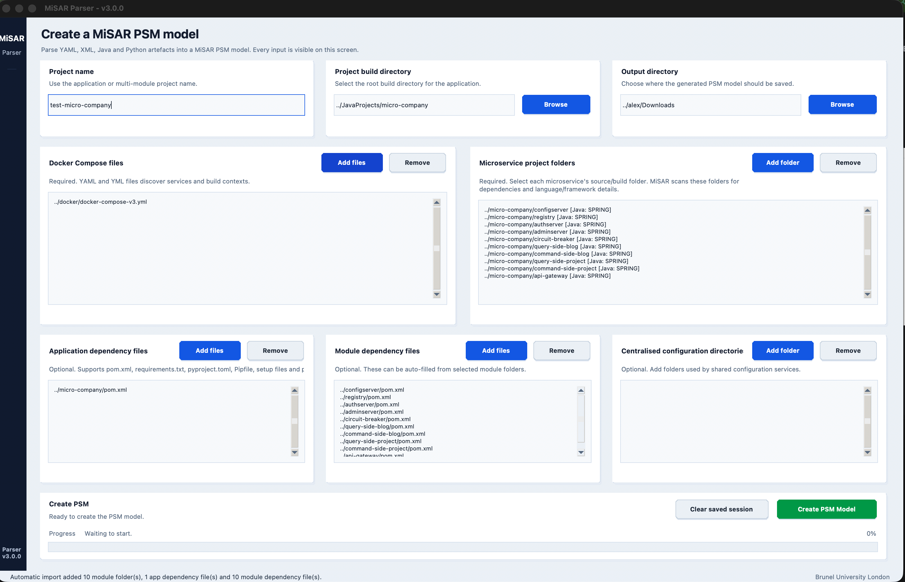
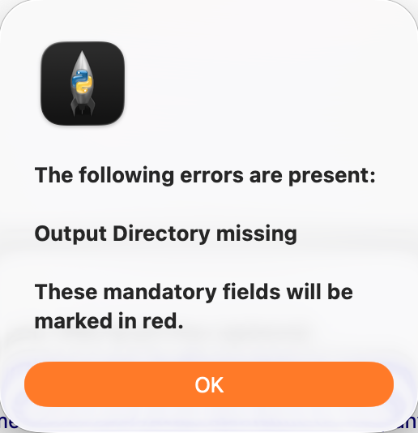
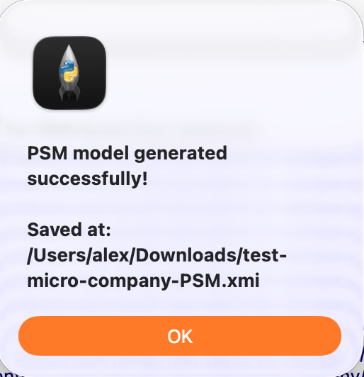

Create PSM (Platform Specific Model)¶
In this part, you will learn how to use the MiSAR Parser to generate a Platform Specific Model (PSM) from an existing microservice codebase.
Launch Parser¶
Run python3 MiSAR.py to open the MiSAR AIO interface, then click Launch under MiSAR Parser.

Configure Parser Inputs¶
The MiSAR Parser requires information about the multi-module microservice project that will be analysed.
The field names below match the MiSAR Parser interface.

Input Fields¶
| Field in MiSAR Parser | Required | Description |
|---|---|---|
| Type Multi-Module Project Name | ✅ | The name of the microservice system or project being analysed. This name is used when creating the PSM model. |
| Select Multi-Module Project Build Directory | ✅ | The root build directory of the multi-module project. This should usually be the main project folder that contains the microservice modules, build files, and source code. Select the exact folder that contains the source code. For example, if the code is inside a subfolder, open that subfolder or click on it, then press the “Select Folder” button. |
| Select Directory where the PSM will be saved | ✅ | The output directory where the generated PSM model will be saved. |
| Select Docker Compose Files | ✅ | The Docker Compose file or files used by the system. These are used to identify services and project structure. |
| Select Module Projects Build Directories | ✅ | The build directories of the individual microservice modules. These can be populated automatically when using the automatic importer. |
| Select Multi-Module Project POM Build Files | ❌ | The main Maven pom.xml build file or files for the multi-module project, if available. |
| Select Module Projects POM Build Files | ❌ | The Maven pom.xml files for the individual module projects. These can also be populated automatically when using the automatic importer. |
| Select Centralized Configuration Directories | ❌ | Directories that contain centralised configuration files used by the microservice system, if applicable. |
Automatic Importer¶
If the project includes Docker Compose files, MiSAR can use them to automatically detect and populate several fields.
After selecting the Docker Compose file, MiSAR may prompt you to auto-detect the project files.

When prompted, click Yes to allow MiSAR to auto-detect the related project files.
After Import¶
After the automatic importer runs, the UI may populate fields such as:
- Select Module Projects Build Directories
- Select Multi-Module Project POM Build Files
- Select Module Projects POM Build Files
- Related Docker service information used by the parser

You can still manually edit, add, or remove entries if needed.
Note:
If you are using the automatic importer, you do not need to manually add Select Module Projects Build Directories unless the detected values are missing or incorrect.
Automatic Importer (For Docker Compose)¶
When you add a Docker Compose file, the parser can attempt to auto-populate the remaining required fields.
When prompted, click Yes to auto-detect project files.
After Import¶
The UI will populate: - Docker services - Module paths - POM files
You can manually edit/remove entries.
Validation¶
If required fields are missing, an error message will appear after clicking Create PSM Model.
The missing fields will also be highlighted.

Generate PSM¶
Click Create PSM Model
Output¶
If the process completes successfully, the PSM file will be generated in the selected output directory.
Note:
Depending on the version, a success message may also be displayed showing the file location.

Note for non-Java projects¶
The Docker Compose automatic importer currently works best with Java-based microservice projects.
If the project is not a Java project, you may need to add the microservice build directories manually using Select Module Projects Build Directories.
Support for improved automatic detection for non-Java projects is currently under active development.